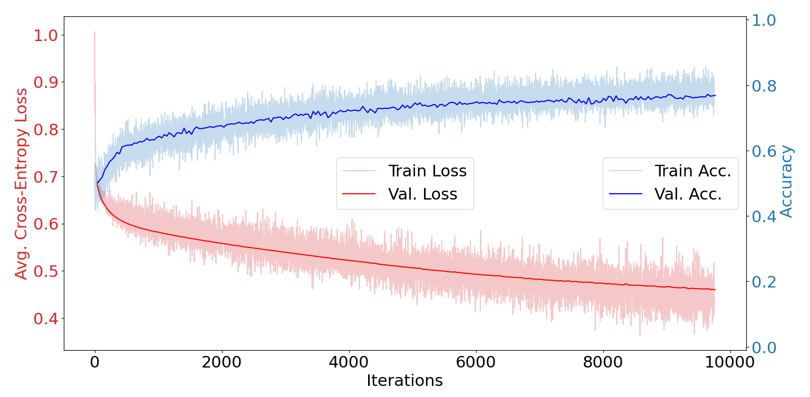
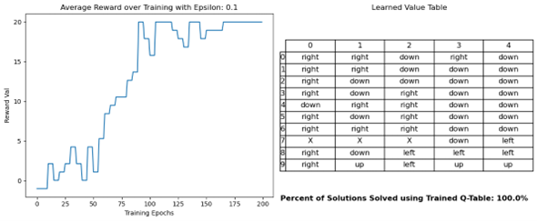

Experimenting with Machine Learning
Through both class assignments and projects I have had the opportunity to explore multiple facets of machine learning, including network architectures, training configurations, data augmentation, and more.
Image Classification & Feed Forward Neural Network Tuning
In a class assignment for AI 535: Deep Learning, I implemented a feed forward neural network for
the CIFAR-10 image dataset capable of achieving ~80% validation accuracy on the test dataset. The network
uses ReLU activation for its hidden layers and a signmoid activation for the single binary output class.
I experimented with different batch sizes, learning rates, hidden layer widths, and numbers of hidden
layers.
The full project code and report can be found at this GitHub
repository.
The figure below presents the most stable training curve obtained during experimentation.

Reinforcement Learning with Gridworld
The objective of this assignment for ROB 537: Learning-Based Control was to implement Q-Learning and SARSA
agents to solve a simple gridworld environment. The environment consists of a 5x10 grid with a fixed goal
location
and a wall that the agent cannot move through. The agent can take one of four up/down/left/right actions per
step.
Finally, the agent receives a reward of -1 when in any cell other than the goal cell. These characteristics
define the problem and feedback used for the RL agents.
The full project code and report can be found at this GitHub
repository.
The figure below presents the most stable training curve, obtained with a Q-Learning agent, as well as the
learned best actions for each cell state in the gridworld environment.

DQN & EA for Cartpole Environment
In another assignment for ROB 537: Learning-Based Control, I implemented a Deep Q-Network (DQN) agent and an
Evolutionary
Algorithm (EA) agent to solve the Gym Cartpole environment. The objective of this environment is to keep a
pole balanced on top of a moving cart by applying left/right forces to the cart, where a reward of +1 is
provided at each step that the pole is off of the ground.
The DQN architecture used two feed forward neural networks: one for estimating Q-values and one "target"
network that acts as a stable reference during training. The EA agent uses iteratively evolves a population
of candidate Q-Network policies through multiple generations of selection, crossover, and mutation
operations.
The full project code and report can be found at this GitHub
repository.